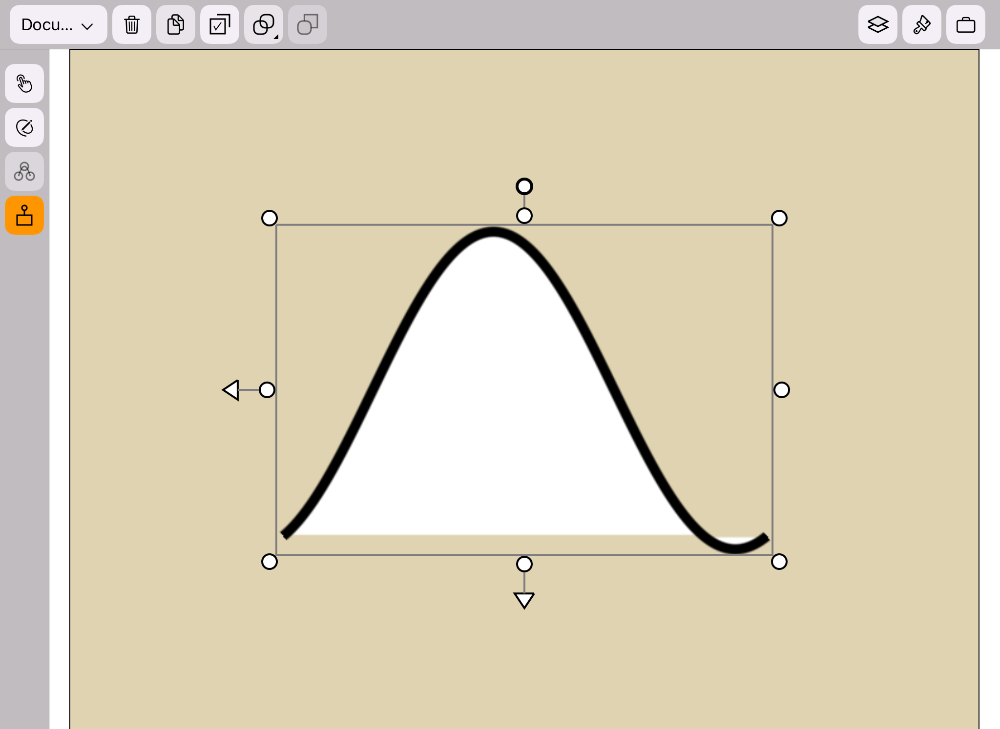
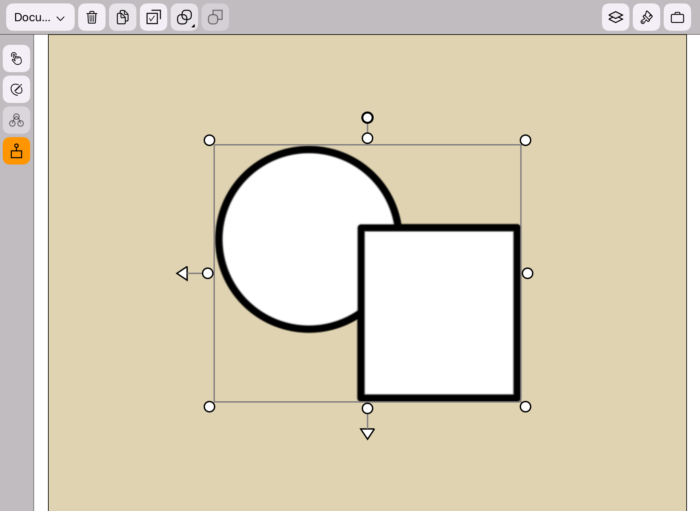
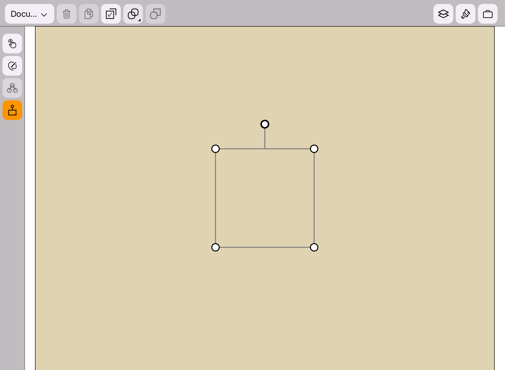
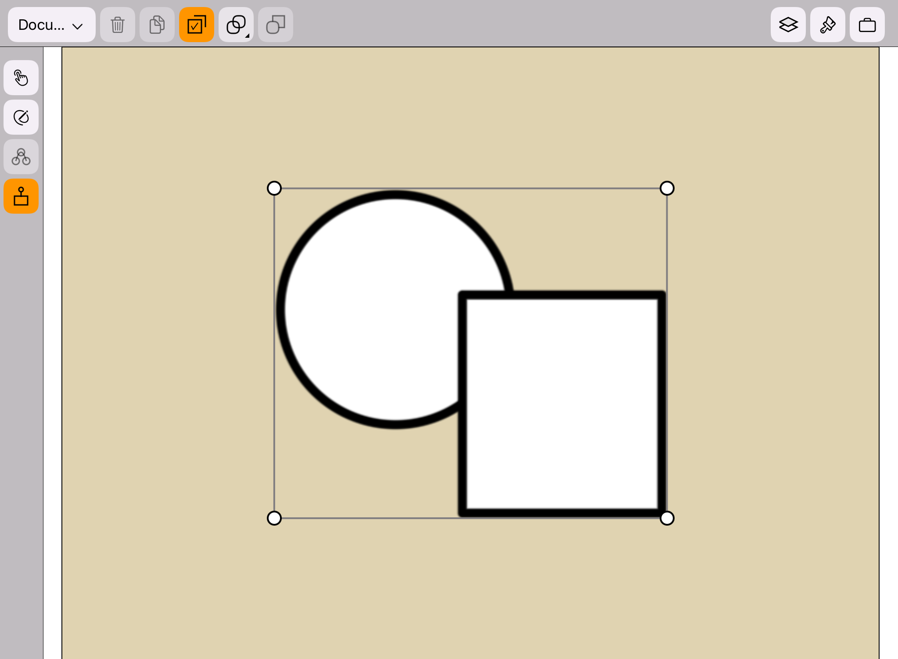

Turn on the Transform Mode
App Version: 1.07
When no layer or group is selected, the transform icon
is disabled.
When one layer or group is selected, or multiple layers or groups are selected, the transform icon
is enabled.
When the transform icon is enabled, single tap the transform icon
can toggle the transform mode on and off.
When the transform mode is on: The background color of the transform icon is orange. When a shape is selected, the transform widget will appear around the shape, as shown in the figure below.

When a group is selected, the transform widget will appear around the group, as shown in the figure below.
When the canvas is selected, the transform widget will appear around the canvas, as shown in the figure below.
When multiple shapes or groups are selected, the transform widget will appear around them, as shown in the figure below.